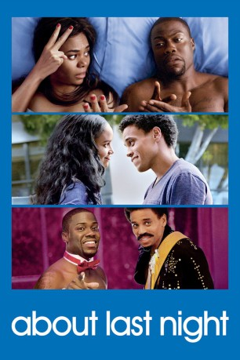

#7722 About Last Night
 
 IMDB-Wertung: 6.1 / 10
IMDB-Wertung: 6.1 / 10  Tomatometer: 69
Tomatometer: 69  Metascore: 0
Metascore: 0 
Irgendwas ist da schiefgelaufen: Die beiden Freunde Danny und Bernie sind eigentlich daran gewöhnt, einen One-Night-Stand an den nächsten zu reihen, sich gegenseitig von ihren Aufrissen zu erzählen und nicht zurück zu blicken. Bis für Bernie eines Tages aus einer verfänglichen Nacht mehr wird: Plötzlich ist er mit Joan zusammen und erduldet sogar ihre Kochkünste, um mit ihr zusammen sein zu können. Und als ob feste Beziehungen ansteckend wären, funkt es auch zwischen Danny und seiner neusten Beute Debbie, die zufälliger Weise eng mit Joan befreundet ist. Was also eigentlich ein Beziehungsproblem unter vier Augen sein müsste, wird ab sofort von vier Augen beleuchtet, bestritten und beklagt.
Jahr: 2014
Dauer: 100 Minuten
FSK: 12
Land: USA Studio: Screen GemsTonspuren: DTS - ,
Untertitel: Deutsch,
Auflösung: 1080p (1920x800) Größe: 5335 MB
Genre: Komödie, Liebe
Regisseur: Steve Pink
Drehbuch: Leslye Headland
Soundtrack: Marcus Miller
Darsteller:
 Kevin Hart als Bernie
Kevin Hart als Bernie Michael Ealy als Danny
Michael Ealy als Danny Regina Hall als Joan
Regina Hall als Joan Joy Bryant als Debbie
Joy Bryant als Debbie Christopher McDonald als Casey McNeil
Christopher McDonald als Casey McNeil Adam Rodriguez als Steven Thaler
Adam Rodriguez als Steven Thaler Joe Lo Truglio als Ryan Keller
Joe Lo Truglio als Ryan Keller Paula Patton als Alison
Paula Patton als Alison- Terrell Owens als Himself
- Catherine Shu als Asian Manicurist
- David Greenman als Isaac
 Bryan Callen als Trent
Bryan Callen als Trent- Selita Ebanks als Pretty Lady
- Jessica Lu als Ad Executive
- James McAndrew als Ad Executive
- Michael Voltaggio als Chef
- Krystal M. Harris als Dog Walker
 Jack Betts als Old Man
Jack Betts als Old Man- Kristin Slaysman als Volunteer
- Mehcad Brooks als Derek
- Tracey Graves als Bernie's Trashy Date
- Trae Ireland als Boring Date
 Steve Terada als Bartender
Steve Terada als Bartender- Brenda Vivian als Cigarette Girl
- Melorine Adler als Hot Girl in Costume (uncredited)
- Jason Axinn als Co-Worker (uncredited)
- Scarlett Burke als Casey's Hostess (uncredited)
- Jennifer Jules Hart als Bartender (uncredited)
- Michelle LaRue als Party Goer (uncredited)
- Kandiss Marie Lewis als Waitress (uncredited)
- Barrett Perlman als Carlson Co-Worker (uncredited)
- Hudson Phillips als Bar Goer (uncredited)
- Tristin Rupp als Friend (uncredited)
- Jaynee Silvers als Bartender (uncredited)
- Brian Swinehart als Co - Worker (uncredited)
- Jovanny Venegas als DJ (uncredited)
- Paul Quinn als Drunk Regular
- Hailey Boyle als New Roommate
- Randolph Adams als Ad Executive
- Stan Weightman Jr. als Company Manager
- Gabriela Castillo als Bar Goer (uncredited)
- Steve Hersack als Executive (uncredited)
- Prestin Persson als Unaccredited Partier (uncredited)
Datei: X:\2014(A-F)\About Last Night (2014, FSK12, 1920x800).mkv seit 15.12.2017
Festplatte: HD 2013(I-Z)-2014(A-Z)
 Es gibt insgesamt 119 Filme in der Gruppe '2014(A-F)'
Es gibt insgesamt 119 Filme in der Gruppe '2014(A-F)'